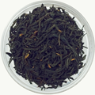
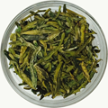
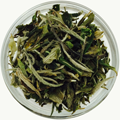
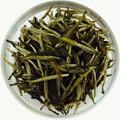
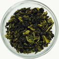
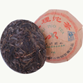

Shop here for best loose leaf teas:
Aromatic, naturally sweet, fruity, malt and chocolate, hints of smoke are all descriptions we hear about our black teas.
China's green teas are notable for their seemingly endless varieties, artistically-shaped leaves and a very clean fresh flavors.
Each year, we look for rare and unusual, single-origin loose leaf teas that are not commonly found outside of the Chinese border.
Rich in aroma and taste, white teas are ideal if you savor the unusual and nuanced tastes of early spring.White tea is processed that less oxidation.
Our oolongs, from artisan suppliers in Fujian and Guangdong, have unique flavors through processes that have been practiced for generations.
Puer tea is an aged black tea from China prized for its medicinal properties and earthy flavor. It is perhaps the most mysterious of all tea.
